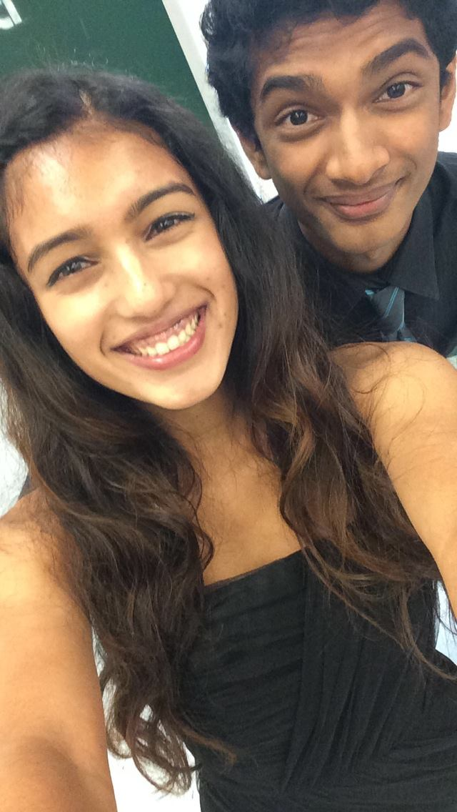
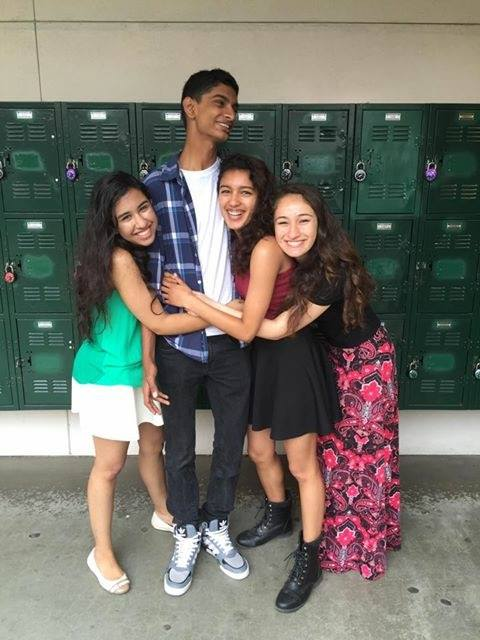

So I have a confession to make. I am terrified of college acceptances. That is right, acceptances, not decisions, not rejections, but acceptances. Now these acceptances are not my own, but those of my friends and peers. I am scared to death to see how I react and feel about THESE acceptances. I am scared that I will become bitter, disillusioned, and more jealous about them than happy for them. That is my biggest nightmare.
That day of acceptances has come. I myself was rejected from Caltech, which was a surreal experience. I likened the rejection to nothing more than watching the Patriots or Warriors lose. In fact, I was more worried about the physics midterm I bombed than the result of Caltech. But when many of my friends applied to MIT today, I suddenly started to become a nervous wreck. I was twitchy, I couldn’t stay still. Most of it was excitement for my friends: I really wanted them to get in. But subconsciously, I knew that I was nervous about my own reactions. And I am proud to say, that I did not succumb to my fears.
My best friend got into MIT today. MY BEST FRIEND GOT INTO HER DREAM SCHOOL HOLY SHIT!!!! When I heard the news, I was relieved. All her hard work and struggles had paid off, and I am glad to say that I was truly happy. She is the person who deserves getting into MIT the most, and by god it feels damn good to see her get in. After that minute of relief and jubilation, I realized something amazing. I had not felt any bitterness whatsoever. Like no pang of regret or jealousy that I expected myself to feel. And that felt sooo fucking good. Like that perhaps made my day, made me even happier than normal. And now that I can breathe again:
CONGRATULATIONS URMIIIIIII!!!!!!
MIT couldn’t have accepted a better person. I am genuinely (see the above paragraphs for proof) happy and excited for you, and I know that you will do great things in your future. I am so glad to see all your hard work and dedication have paid off, and to top that, now you don’t even have to worry about your Multi/Phyiscs Grade (Pretty sure that this was the best side benefit ever). Seriously though, you are a special and amazing individual, and you will do great! I hope we still will keep in touch when you will be really busy and I will most likely be attending classes at the University of Phoenix, and once again. CONGRATULATIONS MOTHERFUCKER!!
Wow, I guess I can even post a picture of us here haha.
 So until the next time that I am sad, jealous, and bitter that I didn’t get into a school, I am proud to say that I am not sad, jealous, and bitter that my best friend got into MIT!!
Quote of the Day:
I'd like to say to all my fans out there, thanks for the support. And to all my doubters, thanks very much because you have also pushed me -Usain Bolt